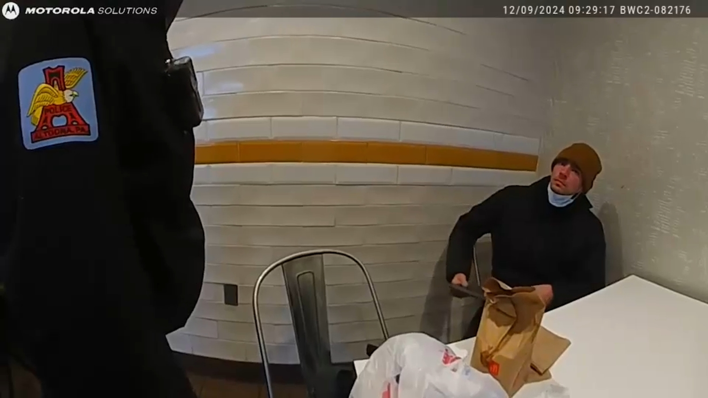

October 03, 2026
Bodycam Released: The McDonald's Moment Cops Knew They Had Luigi Mangione


Stills: Altoona Police Department via AP
Bodycam Released: The McDonald's Moment Cops Knew They Had Luigi Mangione
Nearly two years after five days of the largest manhunt in recent memory, we can finally watch how it ended: inside a McDonald's in Altoona, Pennsylvania, over a hash brown and Christmas music.
A Manhattan judge unsealed the body-camera recordings Friday — released by the Manhattan District Attorney's office after CNN petitioned for them — showing the Dec. 9, 2024 arrest of Luigi Mangione in the shooting death of UnitedHealthcare CEO Brian Thompson, gunned down five days earlier outside a midtown Manhattan hotel.
The footage opens as officers descend on the McDonald's, nearly 300 miles from Manhattan, on a call about a suspicious person. They find Mangione — the Ivy League-educated scion of a wealthy Baltimore County family — seated at a table in a ski hat, surgical face mask and winter coat.
"You're a little nervous right now. Why are you nervous?" an officer asks.
Officers ask him to lower the mask. Then, stepping outside to speak out of his earshot, one officer says what everyone watching has been thinking:
"That's 100% him." "I told you, man," another replies off camera.
Mangione first hands over a phony New Jersey driver's license bearing the name Mark Rosario. Confronted, he folds: "Uh, no sir," he admits when asked if that's really his name. "Uh, Luigi," he says when pressed for his real one.
Then comes the moment that will live on cable news forever. An officer searches his backpack — and smiles widely as she pulls out a gun cartridge, wrapped in underwear. Per the AP, a full search later recovered the 9mm handgun authorities say was used in the killing, a silencer, another ammo magazine, and a journal prosecutors say revealed Mangione's intent to "wack" a health insurance executive.
"He has a checklist for today," one officer says, ticking off the seized items to someone on the phone. "Tomorrow he's supposed to do an intel check-in and get a survival kit."
Mangione, 28, pleaded guilty in August to federal stalking charges and faces life in prison at his December sentencing. His state murder trial has been postponed indefinitely while his lawyers argue double jeopardy should throw the whole case out. They unsuccessfully fought to suppress this very footage back in December — and lost.
The most surreal detail? Through the whole confrontation, Mangione is munching a steak, egg and cheese McMuffin while Christmas songs blare overhead.
Graveyard Crew, what's the wildest detail here — the smile on the officer's face, the "Mark Rosario" alias, or the McMuffin?
Photos: Altoona Police Department via AP. Source: Associated Press.
Source: Associated Press — read the original report
← Back to latest stories